Website screenshot collection · v0.1.3 · 18 October 2026
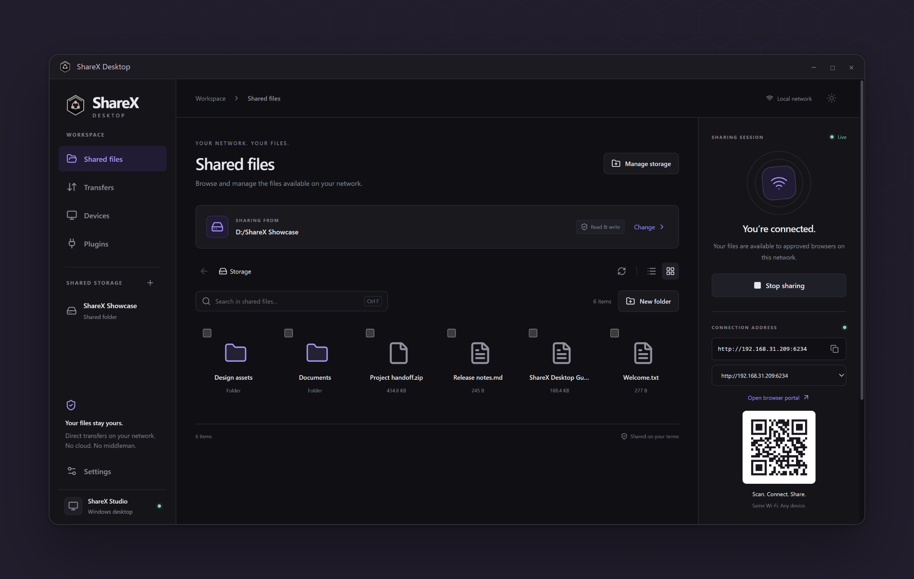
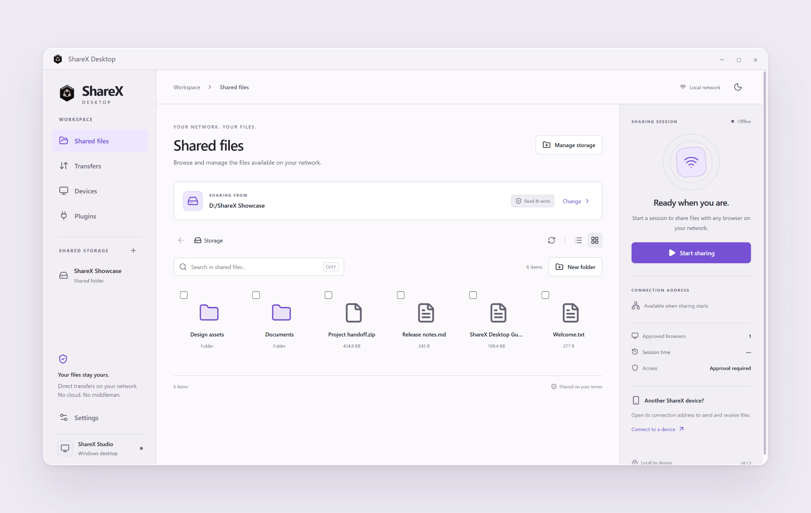
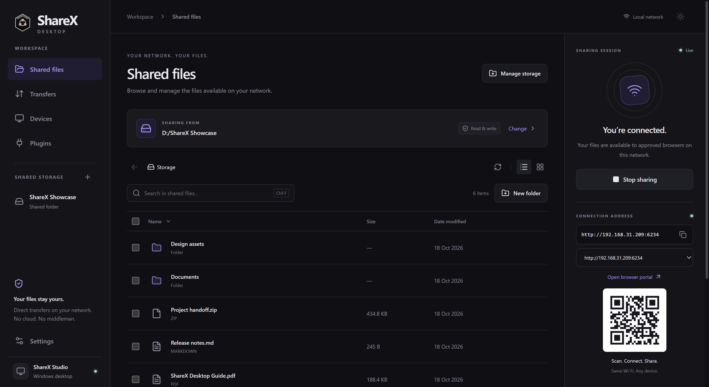
The dark file workspace with a live local sharing session.
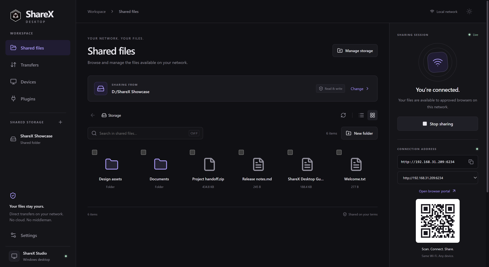
A visual grid of sample folders, documents, and an archive.
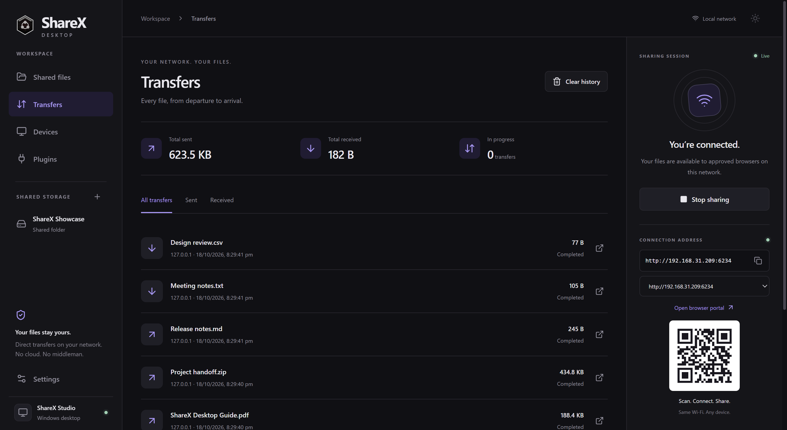
Completed sample uploads and downloads with totals.
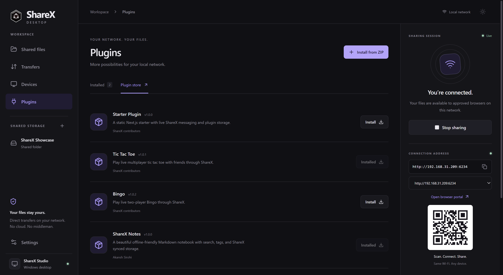
The real ShareX plugin catalog, with two plugins installed.
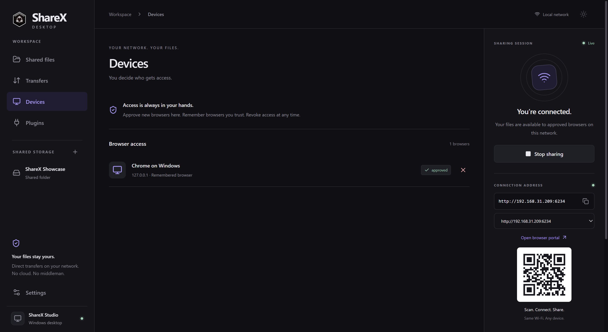
A remembered showcase browser with revocable access.
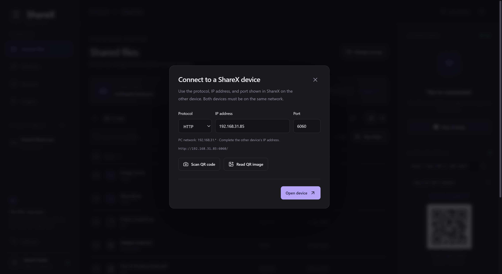
Separate HTTP/HTTPS, IP address, and port controls.
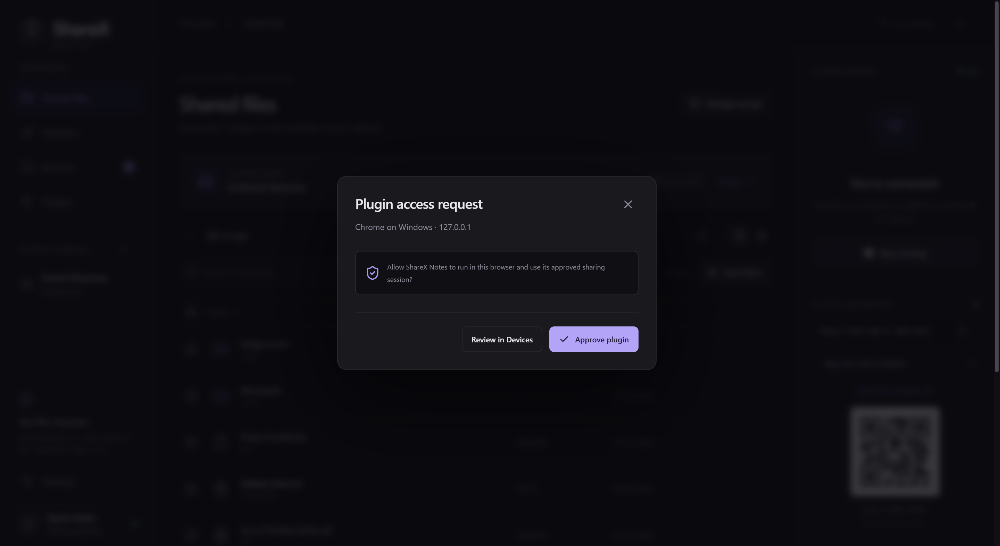
An actual per-browser approval request for ShareX Notes.
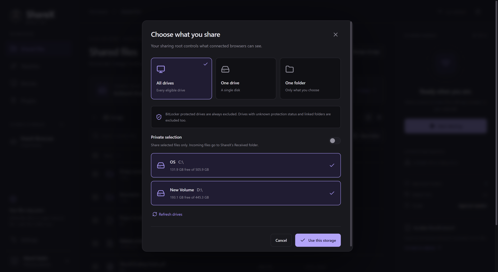
All eligible drives, a single drive, or a folder.
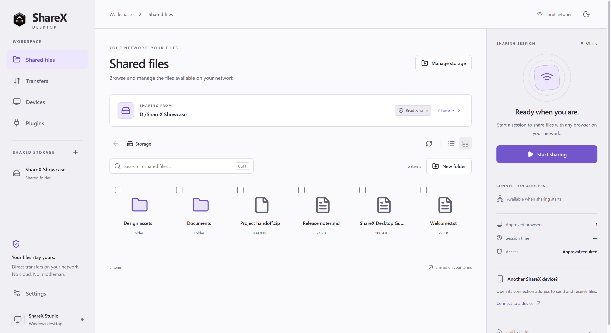
The same sample workspace in the light theme.
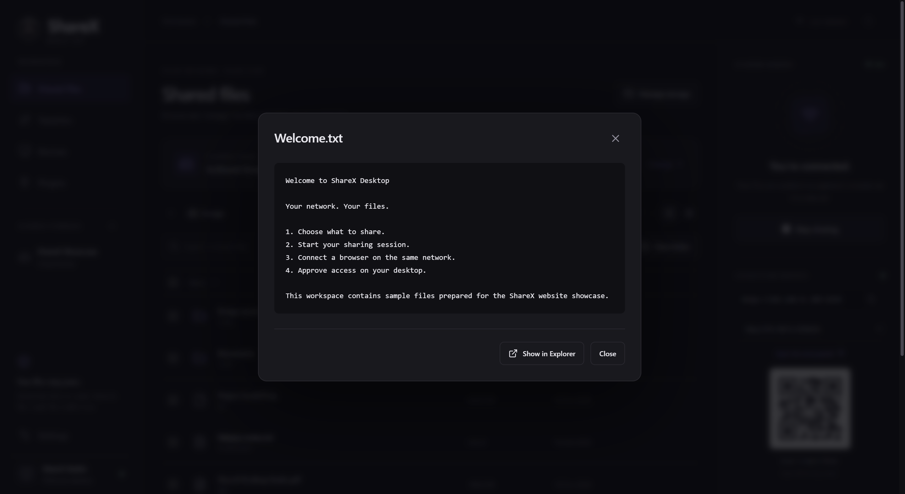
A sample welcome document previewed inside ShareX Desktop.